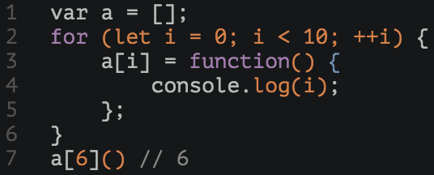
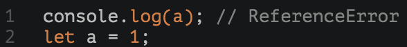
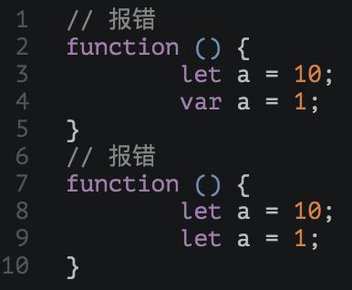
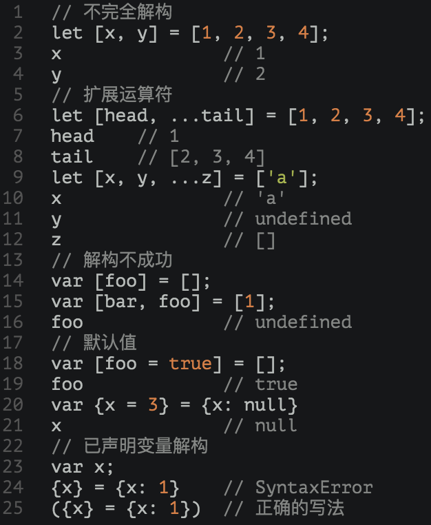

es6 learning
by 谢晓君
主要内容
- 使用ES6
- 变量声明
- 解构赋值
使用ES6
- 浏览器-chrome：启用实验性javascript
- 转码器-babel：使用npm安装babel-cli和babel-preset-es2015包
- node：使用node运行ES6代码时，有时需要使用严格模式，具体可以参考：ECMAScript 2015 (ES6) in Node.js
变量声明--let命令
ES6新增let命令用来声明变量，但是声明的变量只在let命令所在的代码块内有效。

let命令特性
- 块级作用域
- 不存在变量提升
- 不允许重复声明
块级作用域
 |
 |
不存在变量提升
let不像var会发生变量提升现象，所以，使用let声明的变量一定要先声明后使用，否则报错。

特殊的，在区块中使用let命令声明变量时，它声明的变量就绑定了这个区域，不再受外部的影响。在语法上，称为 暂时性死区（Temporal dead zone，简称TDZ）。

不允许重复声明

变量声明--const命令
ES6新增const命令用于声明常量，一旦声明，常量的值就不能被改变。常规模式下，const常量赋值虽然无效但是不会报错；严格模式下会报错。
复合型const变量
对于复合类型的变量，由于变量名不指向数据，而是指向数据所在的地址。const命令只是保证变量名的地址不变，但是并不能保证该地址的数据不变
const命令特性
- 只在声明所在块级作用域内有效
- 不存在变量提升，存在暂时性死区
- 不可重复声明
解构赋值
解构赋值（destructuring assignment）句法是一个Javascript表达式，通过这个表达式，就可以从array或者object中通过一种句法来提取数据。这个句法与array的构造和object的字面定义对应。
解构赋值类型
- 解构数组
- 解构对象
- 解构字符串
- 可遍历结构
- 其他
1、解构数组
2、解构对象
与解构数组不同的是，数组的元素是按照次序排列的，变量的取值由他们的位置决定，而对象的属性没有次序。

3、解构字符串
4、可遍历结构
具有Iterator接口的数据解构，也可以使用解构赋值。
5、其他
特殊解构
本质上，解构赋值这种写法属于模式匹配，只要等号两边的模式相同，左边的变量就会被赋予相应的值。当等号左边的模式只匹配一部分的等号右边的模式，这种情况下解构依然成功。如果解构不成功，等号左边变量的值为undefined。

解构用途
| 1、交换变量 |  |
| 2、模块加载 |
解构用途
| 3、函数参数 | |
| 4、函数返回多个值 |